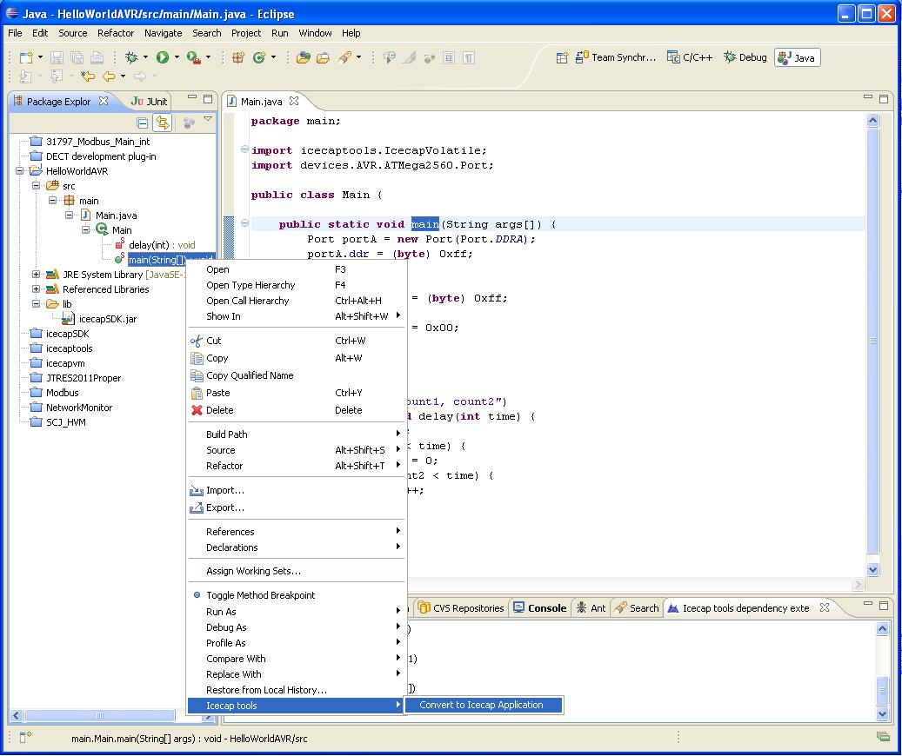

Introduction
In general, for all platforms, the icecaptools will generate the following source and header files:allocation_point.c, allocation_point.h, cr16c_interrupt.s, gc.c, print.c, gc.h, icecapvm.c, methodinterpreter.c, methodinterpreter.h, natives_allOS.c, natives_avr.c, natives_cr16c.c, natives_i86.c, ostypes.h, types.h, rom_access.c, rom_access.h, rom_heap.c, rom_heap.h, native_scj.c, x86_32_interrupt.s, x86_64_interrupt.s
For deployment on desktop platforms (Windows/Linux/Mac) an Eclipse launcher has been added. The name of the launch configuration is "HVM POSIX Launcher". This launch configuration will build and link the files above to produce an executable for Windows/Linux - and it will automitically run the executable from inside Eclipse.
The *.s files are only required if you intend to utilize the Process switching feature implemented in the vm.Process class. This feature is only supported for the cr16 and 32 and 64 bit intel platforms. It is easy to implement similar *.s files for other targets, using these as templates. Only one of the natives_*.c should be required in your project. Ports exist for ATMega2560 (natives_avr.c), cr16 (natives_cr16c.c) and 32/64 bit intel (natives_i86.c). Include the one you require or make your own using the existing ones as template. The file native_scj.c is only required for running the SCJ implementation on a 32/64 bit intel platform. All header files must be included in the project. Add the proper subset of these files to your build according to your build environment.
Debugging
Eclipse single step debugging is supported. To debug a HVM program in Eclipse just launch it in debug mode and insert breakpoints. Not all features are available but basic breakpoints, and various modes of stepping are supported. Inspection of variables are available as well for basic data types.
Tutorials
For embedded environments the user must create a proper build and deployment project using the editor relevant for his target. Below follows examples of how to program, compile, download and run a "HelloWorld" Java application for 3 different micro controllers: the AVR ATMega2560 micro controller, the CR16c from National and the NECv850. These platforms are similar when it comes to processing power and memory resources - 256 to 768 kB of program memory (flash) and 2 to 8 kB of dynamic memory (RAM/Heap). They represent the class of platforms for which the HVM is designed, but the HVM may run on even smaller platforms. The "HelloWorld" example is a while loop that blinks a LED attached to one of the output ports of the CPU. The program is executing successfully if the user can observe the LED blinking, either directly or using a scope.
All three tutorials follow three steps,
- Create a C project using which ever development environment is natural for the platform - for ATMega it is AVRStudio 4, for CR16 it is Eclipse, for NECv850 it is IAR Embedded Workbench. Make sure the C project works and the LED is blinking
- Create a normal Java project in eclipse with default setup values. Create a program that blinks the LED. How to turn off/on the LED is hardware specific - this platform dependence is encapsulated into proper Java Hardware Objects
- Convert the Java program into C and include it in the C build. Build, download and reset
It is very easy to make the HVM work with any other embedded target for which a C compiler exists. All that is required is,
- Create a native file for the platform. See existing native files (natives_avr.c, natives_cr16c.c, natives_necv850.c) for examples
- Create hardware objects as required. Look at existing Java classes (devices.CR16C.KT4585.LED, devices.AVR.ATMega2560.Port) for examples
- Add auto-generated C files to existing C build projects as exemplified below
ATMega 2560
Before jumping straight into the Java world we must make sure that the C environment is functioning. In this tutorial we will use the AVRStudio 4 C programming environment.
We assume that the reader is familiar with the use of the AVRStudio 4 (or similar) environment.
- Using AVRStudio 4 create a new C project and configure it to be build using the GCC tool chain.
- Implement a C function blinking a LED. You can make your own or use something like this:
- Compile this program and download it to the target.
- Verify that your program is running. This will require you to either use a scope on port A pins 0-7 or connect port A to the LEDs on your evaluation board. Change the speed by which the LEDs are blinking by changing the actual value for the 'time' parameter in the 'delay' function and observe that the LEDs are blinking faster/slower as expected.
#include <avr\io.h>
static void init_led(void) {
DDRA = 0xff;
}
static void led_on(void) {
PORTA = 0x00;
}
static void led_off(void) {
PORTA = 0xff;
}
static void delay(int time) {
volatile int count1 = 0;
while (count1 < time) {
volatile int count2 = 0;
while (count2 < time) {
count2++;
}
count1++;
}
}
int main(int argv, char** args) {
init_led();
while (1) {
led_on();
delay(200);
led_off();
delay(100);
}
return 0;
}
Do not move on with the Java environment until you are confident that the example from above is running in C. Here is a picture of a successful setup:
We are now ready to do the same in Java
Java is often programmed using the Eclipse editor and we must first set up Eclipse to use it with Java and the HVM.
- Make sure that your installation of Eclipse can be used to create and compile Java projects. Most Eclipse installations will be able to do this out of the box.
- Download the HVM tools as an Eclipse plugin from the Download section of the HVM homepage (icelab.dk). This plugin is distributed as a single '.jar' file. Place this file in the eclipse plugins folder. This could be something like 'C:\Program Files\eclipse\plugins'. If you have several installations of Eclipse you must place the file in plugins folder corresponding to the particular installation that you wish to use here. The plugin is tested to work with both Windows and Linux, and there is a good chance that it will run on MAC installations as well.
- Restart Eclipse. Viewing the Eclipse installation details from under the 'Help' menu and 'About Eclipse' should reveal that the HVM plugin has been installed. It's name is 'Icecaptools'. If you now or later suspect that the plugin has not been activated try restarting Eclipse from the command line giving it the -clean options ("eclipse.exe -clean"). The plugin requires a JDK1.6 SE or later Java environment.
 Eclipse installation details
Eclipse installation details
Now we can start programming the "HelloWorld" program using Java.
- Create a new Java project with default options.
- Add a lib folder to your project.
- From under the Download section of the HVM homepage (icelab.dk) download the icecapSDK.jar file and place it in the lib folder.
- In Eclipse right click your Java project and select 'Refresh'.
- Expand the lib folder and verify that the icecapSDK.jar library appears.
- In Eclipse right click you Java project and select "Build Path, Configure Build Path...". Add the icecapSDK.jar to the list of libraries on the Java Build Path:
Correct build path setup
- Add a new package to your project (e.g. 'main') and add a new class to your package (e.g. 'Main').
- Add a main entry point (main method) to your class and implement the LED blinking in Java. All this may look like this,
Eclipse, HelloWorld
Make sure that the above code compiles in Eclipse without errors.
In the program above we use the 'Port' class. This class is from the icecapSDK.jar library. It implements a Hardware Object that is particular to the ATMega2560 hardware. Hardware Objects are described in several articles. On the HVM homepage (icelab.dk) under References you find a link to one of these articles.
In the program above we also use the '@IcecapVolatile' Java annotation. This annotation class is also defined in the icecapSDK.jar library. It signals to the HVM that it should not optimize away the use of certain variables even though they have no side effect.
Now we are ready to use the Icecap tools to transform this Java program into a C program that we can build and download for our target.
-
In the Eclipse project explorer expand the Main class to reveal its methods. Right click on the 'main' method. You should be able to select 'Icecap tools, Convert to Icecap Application' in the resulting pop-up.

Converting Java to C
As a result of this the 'Icecaptools dependency extent' view should appear somewhere in your Eclipse workbench. It looks something like this
Browsing the dependency extent
- After the 'Icecaptools dependency extent' view has appeared right click somewhere inside it. A pop-up will appear were you can select 'Set output folder'. Selecting this will result in a folder selection dialog. In this dialog browse to the folder on the file system where AVRStudio4 keeps the source for the C function blinking a LED that we made above.
- Select 'Convert to Icecap Application' again and verify that a bunch of new files are appearing in the folder.
- Inside AVRStudio 4 remove the original C file from your project and add the following files instead:
- Download the resulting hex file to your board. Observe the LEDs are blinking. They will be blinking slower than before (we will fix this soon). Try and go back to the Java program in Eclipse and change the actual parameter for the delay function and observe that the LEDs are blinking faster/slower as expected.
When this setup is complete it is very easy to go through the cycle of changing your Java program, converting it to C, and compiling & downloading it in AVRStudio.
By default the HVM will use interpretation to execute your Java program. Using interpretation gives a smaller program to be placed in flash - approx. half the size of a similar C program. But interpretation is less efficient - approx. 5-10 times slower than hand coded C.
The HVM also supports direct compilation. You can use the 'Icecaptools dependency extent' view to select methods from the dependency extent to be executed natively instead of interpreted. To do this expand the dependency extent tree and locate 'hot spot' methods. Right click the method and choose 'Toggle Compilation'. Then repeat the build cycle. Now the selected method is executed natively.
Toggling compilation
You can natively execute any subset or all of the methods. Natively executed methods gives a larger program to be placed in flash.
Natively executed methods currently run at approx half the speed of similar functionality implemented using hand coded C.
CR16c
This example is based on the KT4585 wireless DECT module from Polycom. It features a CR16c microprocessor from National Semiconductor. It's a 16 bit design and on the KT4585 it comes with 8Kb RAM and 768Kb flash memory. It is usually programmed using the IAR Embedded Workbench, but in this tutorial we will use the DECT development plugin for Eclipse developed by Polycom. This plugin uses the GCC tool-chain for compiling for the target.
First step is again to make sure that the C environment is functioning properly. Again we want to blink the LED from a C program. How to set up a new C project for the KT4585 is beyond the scope of this tutorial but when properly set up it will look something like this:
CR16 C example
The build file is called hello_gcc_linux.ewp and in there we have added a reference to the source file main.c. In the above example we have soldered a wire from port 2, pin 1 to LED #7 and after a successful compilation, download and reset we observe that the LED is indeed blinking.
Now we are ready to do the same in Java,
- Using eclipse, make a copy of the folder HelloWorld inside the DECT development project. Name the copy HelloWorldJava
- Edit the build file hello_gcc_linux.ewp inside the HelloWorldJava folder. Substitute all occurrences of HelloWorld with HelloWorldJava
- Now the HelloWorldJava folder can be used to build a similar C program as above, and so far it is the same program, but we will use this folder to contain the auto-generated files that is produced by the Icecaptools plugin.
- Create a new Java project using default project setup values
- Add a main package and a Main class with the following content:
package main; import icecaptools.IcecapVolatile; import devices.CR16C.KT4585.LED; public class Main { public static void main(String args[]) { LED led = new LED(); while (true) { led.on(); delay(200); led.off(); delay(200); } } @IcecapVolatile("count1, count2") public static void delay(int time) { int count1 = 0; while (count1 < time) { int count2 = 0; while (count2 < time) { count2++; } count1++; } } } - While in the Java perspective, locate the src folder inside the new HelloWorldJava folder and right click on it. A pop-up will appear from which you can choose the Icecap tools->Set output folder action. Here is a picture of it:
Set output folder
- Now, just as with ATMega2560, expand the Main class in your Java project, locate the main method, right click on it and activate the conversion.
- After a refresh of your projects the HelloWorldJava src folder will be populated with a bunch of new files. Add these to the build file and rebuild, download and reset the board.
NECv850
NEC-V850 Development Board
To add yet another C development platform to this tutorial we will look at using IAR Embedded Workbench for programming the NEC-V850 embedded target. The IAR Embedded Workbench uses the IAR compiler to compile C code.
This is an example of a C application setup managed by the IAR Embedded Workbench:
NECv850 Development
Using this build it was not possible to create a standalone application for blinking the LED. Instead the autogenerated C files produced by the Icecaptools plugin are included in the build through proper configuration using the IAR Embedded Workbench. The files appear in the picture above in the folder hvm. The application is managed by a real time operating system (RTOS). It follows that the LED blinking routine had to be implemented as a RTOS task:
package tasks;
import devices.HWObject;
public class LEDTask extends RTOSTask {
private static class Port extends HWObject {
@SuppressWarnings("unused")
public boolean bit0;
@SuppressWarnings("unused")
public boolean bit1;
@SuppressWarnings("unused")
public boolean bit2;
@SuppressWarnings("unused")
public boolean bit3;
@SuppressWarnings("unused")
public boolean bit4;
@SuppressWarnings("unused")
public boolean bit5;
@SuppressWarnings("unused")
public boolean bit6;
@SuppressWarnings("unused")
public boolean bit7;
public Port(int address) {
super(address);
}
}
private boolean greenledon;
private Port port;
private byte count;
public LEDTask(byte taskID) {
super(taskID);
port = new Port(0xFFFFF412);
greenledon = false;
count = 0;
}
@Override
public boolean run(byte tag) {
if (greenledon) {
port.bit7 = false;
greenledon = false;
} else {
port.bit7 = true;
greenledon = true;
}
count++;
if (count < 10) {
return true;
} else {
return false;
}
}
}
Through code not shown here the RTOS calls back into the Java virtual machine to execute the above Java task with appropriate intervals.
Turning on/off a LED is done through turning on/off bit 7 of a memory mapped device register located at address 0xFFFFF412. This bit has to be manipulated using speciel purpose instructions. How this is accomplished through Java hardware objects is not described here, but the reader can get an idea by looking at the code in the snapshot of the IAR Embedded Workbench above.